Sensing, visualization, and AI-assisted guidance for critical procedures — from battlefield to bedside.
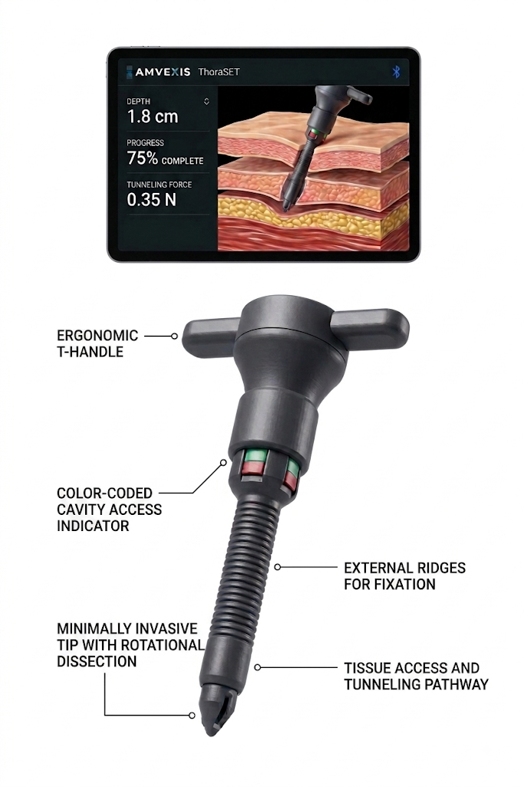
High-risk bedside procedures still depend heavily on tactile estimation, line-of-sight limitations and operator experience. The result is persistent variability, preventable complications and hesitation when seconds matter.
The AMVEXIS platform progressively adds information—mechanical, optical, physiologic and computational—without taking the clinician out of the loop.
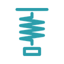
Pressure-sensing thoracostomy technology that provides immediate mechanical feedback during cavity entry, designed to reduce dependence on blind advancement.
Next-generation access platform integrating optical visualization, pressure sensing, and CO₂ detection for real-time procedural awareness.
Human-in-the-loop clinical decision support designed to interpret multimodal procedural data and provide confidence-aware guidance at the point of care.
Precision needle-to-probe alignment technology for vascular access, using mechanically constrained trajectory and depth control to address the same underlying uncertainty.
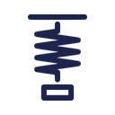
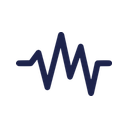
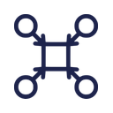
The same technologies that improve civilian procedural consistency become force multipliers in austere environments—where imaging, expertise, time and evacuation are constrained.
Designed for settings where speed, accuracy and reproducibility directly influence outcomes.
Real-time guidance can reduce cognitive burden and help less experienced users approach expert-level speed and accuracy in prolonged casualty care.
ThoraSET has progressed through iterative engineering, mannequin and porcine evaluation, clinician testing and military end-user engagement, supported by a growing translational ecosystem.
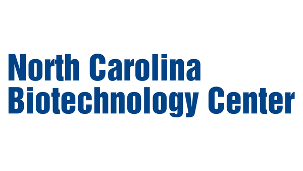
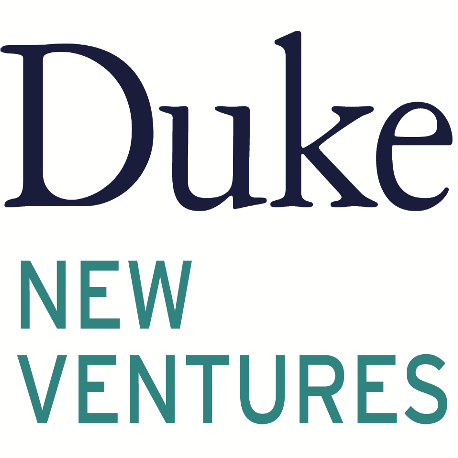
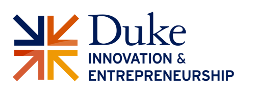
AMVEXIS technology has been reviewed and supported by leaders across military and civilian critical care, trauma and emergency medicine.
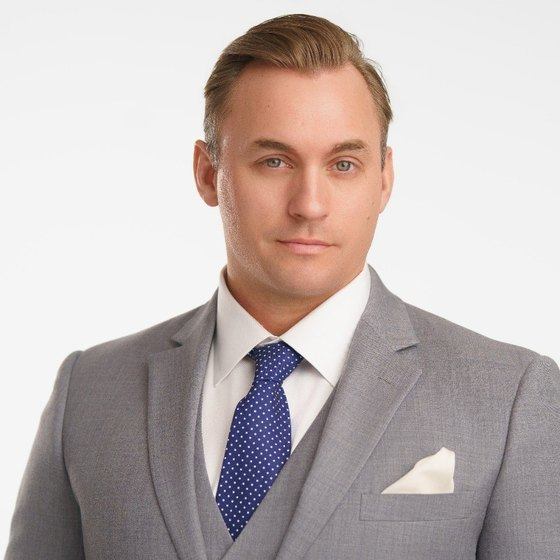
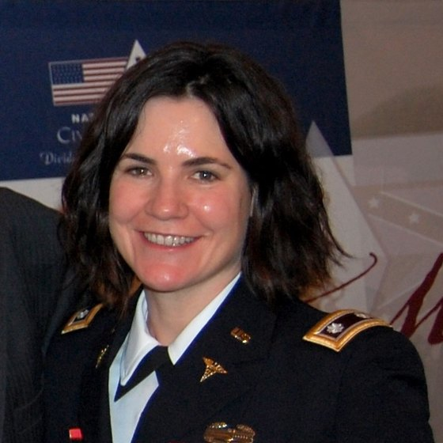
I see this technology replacing ALL chest tube insertion, not simply those anticipated to be difficult placements.
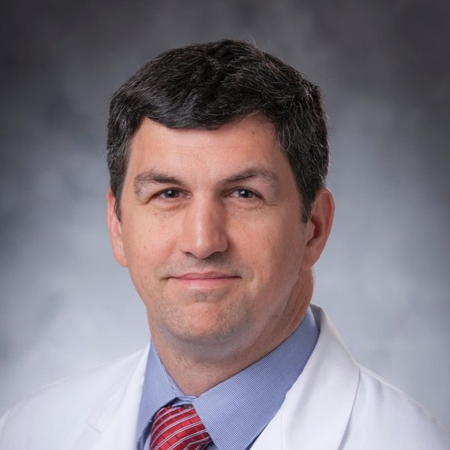
I am confident that this technology will replace 100% of chest tube placements performed in emergent and urgent settings within military environments.
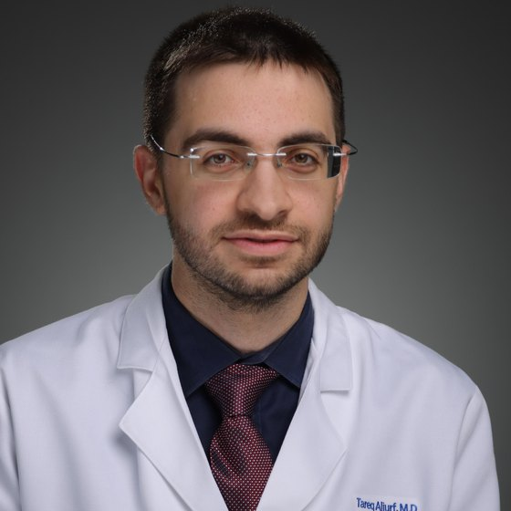
This technology has the potential to become the new standard for chest tube placement.
AMVEXIS was invented at the intersection of critical-care medicine and medical-device engineering.
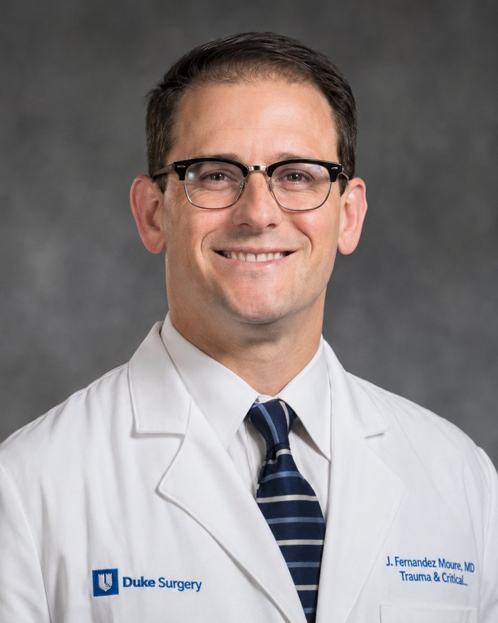
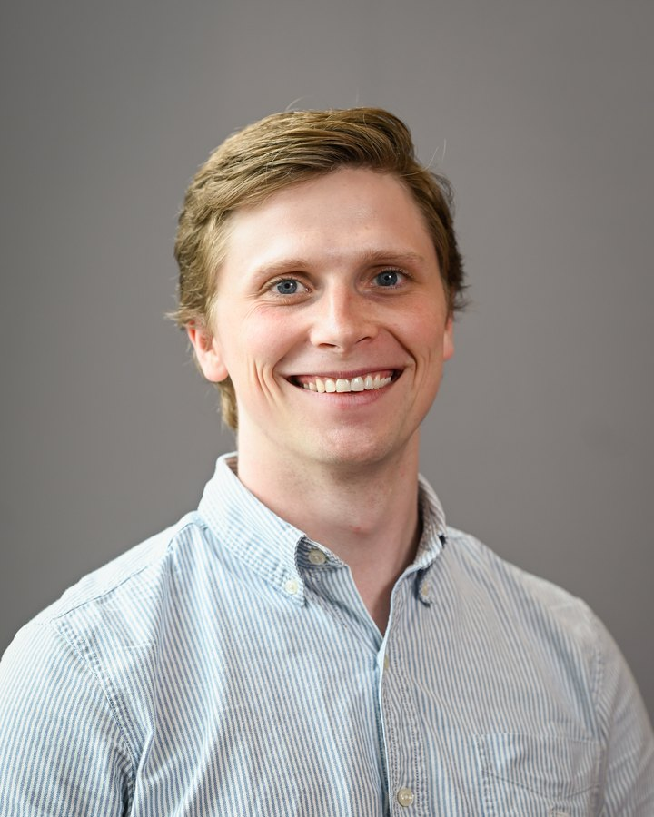
Guided procedural systems designed to make life-saving interventions safer, faster and more reliable—from battlefield to bedside. Reach out to learn more, partner, or evaluate the technology.